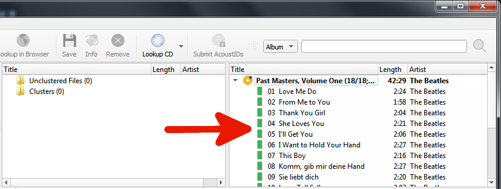
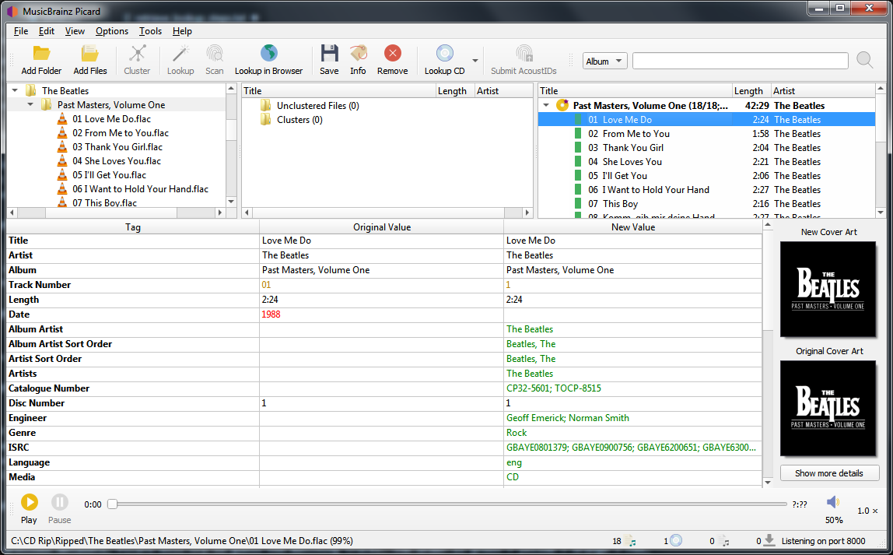

Mise en correspondance des fichiers aux pistes¶
Une fois que vous avez récupéré les informations d’album souhaitées dans le volet de droite, l’étape suivante consiste à faire correspondre les fichiers du volet de gauche à la piste correspondante dans le volet de droite. Un symbole de musique devant un numéro de piste dans le volet de droite indique qu’aucun fichier n’a été attribué à la piste. Dans certains cas, Picard a peut-être déjà essayé de faire l’appariement pour vous. Si la correspondance n’a pas été effectuée automatiquement, faites glisser les fichiers appropriés sur l’album et la piste appropriés.
{kind=link}
Note
Si vous glissez et déposez plusieurs fichiers sur une piste spécifique, le premier fichier sélectionné correspondra à la piste sur laquelle vous avez déposé les fichiers. Le reste des fichiers sélectionnés sera mis en correspondance avec les pistes suivantes dans l’ordre. Cela vous permet d’associer rapidement plusieurs fichiers à une séquence de pistes. Si vous voulez faire correspondre tous les fichiers à une seule piste à la place, vous pouvez maintenir la touche Alt tout en déposant les fichiers.
Si vous déposez plusieurs fichiers sur un album, Picard essaiera de faire correspondre les fichiers aux pistes en fonction des métadonnées.
En fonction de vos métadonnées précédentes, Picard essaiera de deviner les pistes correspondantes. L’ordre est vert > jaune > orange > rouge, où le vert correspond le mieux. Si vous voyez beaucoup de rouge et d’orange, cela pourrait signifier que Picard a mal deviné ou que vos fichiers n’avaient pas beaucoup de métadonnées précédentes avec lesquelles travailler. Si tel est le cas, il est recommandé de sélectionner une piste et de comparer les « Valeurs d’origine » et « Nouvelles valeurs » dans le volet des métadonnées. En cas de correspondance incorrecte, faites simplement glisser la piste à son emplacement correct dans le volet de droite.
{kind=link}
Cliquez avec le bouton droit de la souris sur un élément de la liste des pistes pour afficher un menu de commandes, notamment « Info », « Ouvrir dans le lecteur », « Ouvrir le dossier contenant », « Rechercher des pistes similaires », « Looup dans le navigateur », « Générer des empreintes AcoustID », « Enregistrer » et « Supprimer ». En outre, vous pouvez réexécuter les plugins ou scripts associés uniquement sur l’élément sélectionné. Un clic droit sur un élément dans le volet de gauche fera apparaître un menu similaire de commandes.
Lorsque vous sélectionnez un élément dans le volet de droite, les métadonnées d’origine et les nouvelles de l’élément s’affichent. Un clic droit sur une ligne de la liste des balises affiche un menu de commandes, notamment « Modifier », « Ajouter à la liste “Balises conservées” », « Supprimer » et « Ajouter une nouvelle balise », ainsi qu’une option pour afficher les balises modifiées premier.